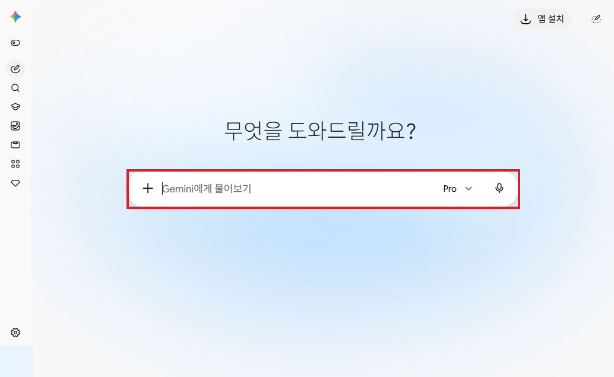
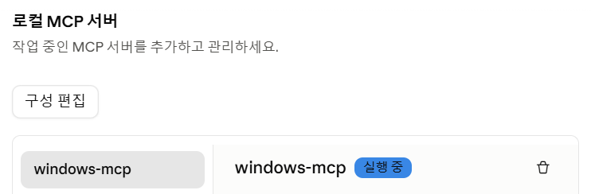
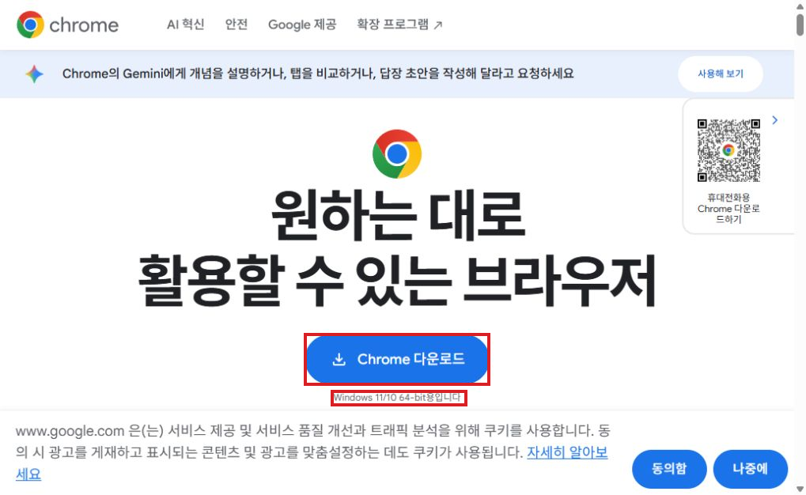
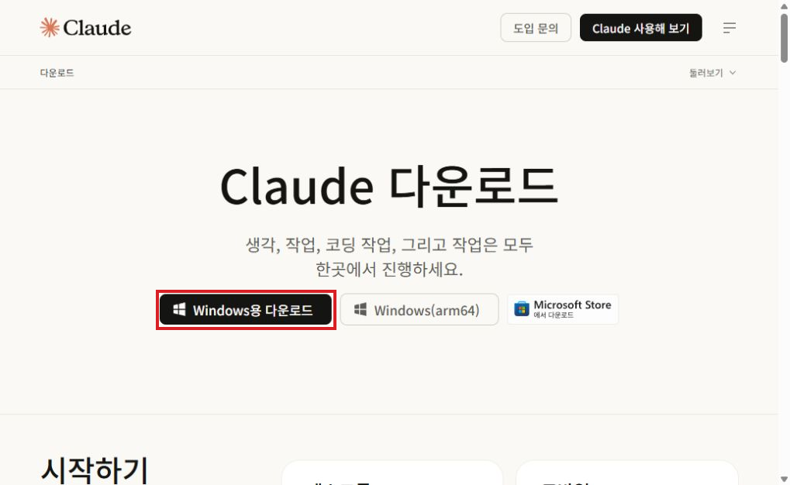

1. 실습 시작 준비: 계정과 Windows 앱
이 장의 목차
목표: 세 도구의 입력창을 열고 실습 파일을 준비합니다. 이 수업은 기존 Google 계정이 있는 학생을 전제로 합니다.
필수 파일: 이번 실습의 Excel과 문서 PDF 한 버전입니다. 파일은 각 실습의 ‘준비물’에서 받습니다.
지금 할 일: 이미 설치된 ChatGPT·Claude 앱과 Chrome의 Gemini 웹을 여세요. 계정과 앱이 준비돼 있으면 아래 ‘1. 앱을 열고 파일 준비하기’부터 시작합니다. 아직 없다면 뒤의 ‘처음 준비하는 경우’를 수업 전에 진행합니다.
1. 앱을 열고 파일 준비하기
- Windows 시작 메뉴 → ChatGPT를 엽니다. 로그인하고 ChatGPT/Codex 선택이 보이면 ChatGPT를 선택합니다. 새 대화 입력창을 확인합니다.
- Windows 시작 메뉴 → Claude를 엽니다. 로그인하고 Claude 대화 화면에서 새 대화를 엽니다.
- Chrome에서 Gemini 웹을 엽니다. Google 계정으로 로그인하고 새 질문 입력창을 확인합니다.

빨간 테두리의 입력창을 사용합니다. 이 수업에서는 Gemini를 웹으로 씁니다.
- 교육 준비물 폴더에서 이번 실습의 Excel과 문서 PDF를 찾습니다.
- 실습 결과를 저장할 폴더를 만듭니다.
준비물은 같은 자료 한 버전만 받기
같은 자료가 Word(DOCX)·한글(HWPX)·PDF로 제공되면 필요한 형식 하나만 받습니다. AI에 첨부할 문서는 PDF를 권장합니다. 직접 고칠 때는 Word나 한글을 선택합니다. 같은 내용의 세 파일을 동시에 첨부하지 않습니다.
Excel은 별도 준비물입니다. 해당 실습의 Excel과 필요한 문서 PDF를 함께 첨부합니다. 파일명·시트·내용이 맞는지 확인합니다.
메뉴가 안 보이면 이렇게 진행하기
계정에 따라 메뉴가 다를 수 있습니다. 사용할 기능이 보이는지 확인하고, 없다면 강사에게 알린 뒤 아래 행동으로 이어갑니다.
| 필요한 기능 | 메뉴가 없거나 실패하면 |
|---|---|
| ChatGPT·Claude 앱 | 같은 서비스 계정으로 ChatGPT 웹·Claude 웹을 열고 같은 저장 대화에서 이어갑니다. |
| 보고서 플러그인 | 실습 지침을 새 대화에 자료와 함께 붙여넣습니다. |
| Claude Projects | 한 대화에 검토 지침과 PDF를 함께 넣습니다. |
| Claude Artifact | 강사에게 알리고 준비물 CSV를 Excel에서 필터해 같은 수치를 확인합니다. |
| Gemini 노트북 | 제공되는 Gemini Notebook 화면을 사용합니다. 없으면 PDF를 첨부한 일반 대화에서 근거를 대조합니다. |
| Gemini 스킬 | 제공되는 Gem을 쓰거나 일반 대화에 같은 지침·FAQ·사례를 넣습니다. |
| 파일 읽기 | 파일명을 확인해 한 번 다시 첨부합니다. 계속 안 되면 필요한 표·문단 한 건을 붙여넣습니다. |
| 편집·내보내기 | 본문을 먼저 복사해 저장합니다. 제공된 실습 예시와 원자료를 비교하고 수정할 부분을 찾습니다. |
앱이 멈췄다면 요청을 중복 전송하지 않습니다. 같은 계정 웹 → 같은 저장 대화 → 마지막 검토·수정 단계로 이어갑니다. 결과가 없으면 자료와 요청문을 다시 넣습니다. 기다림이 길어지면 강사가 제공하는 예시에서 원자료 대조부터 진행합니다.
완료 확인: ChatGPT·Claude·Gemini의 입력창을 열고 이번 실습 파일을 찾았으면 ChatGPT 보고서 실습으로 이동하세요.
사전준비: Claude Desktop에 Windows MCP 연결하기
PC에 프로그램을 설치하고 설정 파일을 편집할 수 있는 에이전트에서 아래 한 줄을 요청합니다. 이미 연결돼 있으면 설치 요청은 건너뜁니다.
https://github.com/CursorTouch/Windows-MCP 를 Claude Desktop용으로 설치하고, 기존 MCP 설정을 유지하면서 서버 등록까지 해 주세요.
- 에이전트가 설치와
claude_desktop_config.json등록을 마치면 Claude Desktop을 완전히 종료한 뒤 다시 엽니다. - 설정 → 개발자에서
windows-mcp가 실행 중인지 확인합니다. 새 대화에서 “Windows MCP로 열린 창 이름만 확인해 줘. 클릭하거나 입력하지 마.”라고 요청해 실제 도구 호출까지 확인합니다.

설치 요청을 보낸 것만으로 완료된 것은 아닙니다. 서버 등록과 연결 확인까지 필요합니다. 이 안내는 Claude Desktop용입니다. 제공자 안내
사전준비: 임세범 한글 스킬을 Claude에 추가하기
스킬 이름은 hwpx입니다. 한글 HWPX 문서를 만들고 편집·검증합니다. 이미 추가했다면 설치 요청은 건너뜁니다. 파일을 내려받을 수 있는 에이전트에 아래 한 줄을 요청합니다.
https://github.com/imsebeom/hwpx-skills 의 hwpx-web-skill.zip을 내려받아 Claude 한글 스킬 설치를 준비해 주세요.
- Claude Desktop 또는 Claude 웹에서 맞춤 설정 → 스킬(Customize → Skills) → + → 스킬 만들기 → 스킬 업로드를 엽니다.
hwpx-web-skill.zip을 압축을 풀지 않은 채 업로드하고 hwpx 사용을 켭니다. ZIP 다운로드 페이지 - 새 대화에서 “hwpx 스킬로 제목이 ‘AI 업무활용 교육 안내’인 HWPX 파일을 만들고 검증해 줘.”라고 요청합니다. 내려받은
.hwpx파일을 폴라리스 또는 한글 프로그램으로 열어 제목과 표시 상태를 확인합니다.
프롬프트만으로 Claude 웹·Desktop에 스킬이 설치되는 것은 아닙니다. ZIP 업로드가 필요합니다. 스킬 메뉴가 보이지 않으면 같은 계정의 웹에서 확인하고, 설정 → 기능의 코드 실행 및 파일 생성과 조직의 스킬 사용 허용 여부를 확인합니다. Claude 공식 스킬 안내
이 안내는 .hwpx용입니다. imsebeom/hwpx는 Claude Code용 별도 설치 안내이며, 여기서는 hwpx-skills의 웹용 ZIP을 사용합니다.
2. 처음 준비하는 경우: 필요한 것만 진행하기
수업 전 30~45분을 확보합니다. 이미 있는 계정·앱은 그대로 사용합니다.
준비 순서는 Chrome → 기존 Google 계정으로 Gemini 웹 로그인 → 같은 Google 계정으로 ChatGPT 가입·Windows 앱 설치 → Claude 가입·Windows 앱 설치입니다. 같은 Google 계정으로 로그인해도 ChatGPT와 Claude는 각각 별도의 서비스 계정입니다.
아래는 처음 준비할 때 참고하는 안내입니다. 화면이 다르면 현재 서비스의 안내를 따릅니다.
Chrome이 없다면
- Chrome 공식 다운로드를 엽니다.
- Windows용 다운로드를 선택합니다.

- 받은 설치 파일을 실행합니다.
- 설치 안내를 마친 뒤 Chrome을 엽니다.
완료 확인: Chrome 창이 열리면 다음 단계로 갑니다. 이미 Chrome이 있으면 다시 설치하지 않습니다. 기관 PC에서 설치가 제한되면 담당자에게 요청합니다. 공식 설치 안내
Gemini 웹에 로그인하기
- Chrome에서 Gemini 웹을 엽니다.
- 로그인을 선택합니다.
- 기존 Google 계정으로 로그인합니다.
완료 확인: 새 질문 입력창이 보이면 준비됐습니다. 위의 Gemini 입력창 캡처를 참고하세요. 이 과정에서는 별도 설치 없이 웹을 사용합니다. 기관 계정에서 접속이 제한되면 강사에게 알립니다. 공식 로그인 안내
ChatGPT 계정·앱이 없다면
- Chrome에서 ChatGPT를 엽니다.
- 가입 화면에서 Google 로그인이 표시되면 같은 Google 계정을 선택합니다. 기존 계정은 처음 가입한 방식으로 로그인합니다.
- 본인이 화면의 가입·인증 안내를 마칩니다.
- ChatGPT 공식 다운로드에서 Windows용 다운로드를 선택합니다.
- 공식 설치 안내에 따라 설치를 마칩니다.
- Windows 시작 메뉴에서 ChatGPT를 엽니다.
- 같은 계정으로 로그인합니다.
- ChatGPT/Codex 선택이 보이면 ChatGPT를 선택합니다.
완료 확인: 새 대화 입력창이 보이면 준비됐습니다. Windows 공식 안내·공식 빠른 시작
Claude 계정·앱이 없다면
- Chrome에서 Claude를 엽니다.
- Continue with Google에 해당하는 항목을 선택합니다.
- 같은 Google 계정으로 본인이 화면의 가입·인증을 마칩니다. 기존 계정은 로그인합니다.
- Claude 공식 다운로드에서 Windows용 다운로드를 선택합니다.

- 받은 파일로 설치를 마칩니다. PC가 ARM64 방식이면 화면의 해당 버전을 확인합니다.
- Windows 시작 메뉴에서 Claude를 엽니다.
- 같은 계정으로 로그인합니다.
- Claude 대화 화면을 엽니다.
완료 확인: 새 입력창이 보이면 준비됐습니다. 공식 로그인 안내·Desktop 공식 설치 안내